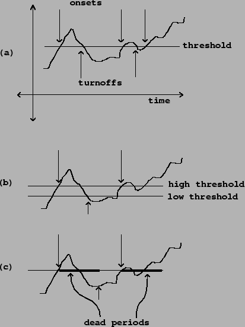

Besides taking snapshots, a second mode of passing information from audio signals to control computations is event detection. Here we derive time information from the audio signal. An example is threshold detection, in which the input is an audio signal and the output is a time sequence. We'll consider the example of threshold detection in some detail here.
A typical reason to use threshold detection is to find out when some kind of activity starts and stops, such as a performer playing an instrument. We'll suppose we already have a continuous measure of activity in the form of an audio signal. (This can be done, for example, using an envelope follower). What we want is a pair of time sequences, one which marks times in which activity starts, and the other marking stops.
|  |
Figure 3.7 (part a) shows a simple realization of this idea. We assume the signal input is as shown in the continuous graph. A horizontal line shows the constant value of the threshold. The time sequence marked ``onsets" contains one event for each time the signal crosses the threshold from below to above; the one marked ``turnoffs" marks crossings in the other direction.
In many situations we will get undesirable onsets and turnoffs caused by small ripples in the signal close to the threshold. This is avoided by debouncing, which can be done in at least two simple ways. First, as shown in part (b) of the figure, we can set two thresholds: a high one for marking onsets, and a lower one for turnoffs. In this scheme the rule is that we only report the first onset after each turnoff, and, vice versa, we only report one turnoff after each onset. Thus the third time the signal crosses the high threshold in the figure, there is no reported onset because there was no turnoff since the previous one. (At startup, we act as if the most recent output was a turnoff, so that the first onset is reported.)
A second approach to filtering out multiple onsets and turnoffs, shown in part (c) of the figure, is to associate a dead period to each onset. This is a constant interval of time after each reported onset, during which we refuse to report more onsets or turnoffs. After the period ends, if the signal has dropped below the threshold in the meantime, we belatedly report a turnoff. Dead periods may also be associated with turnoffs, and the two time periods may have different values.
The two filtering strategies may be used separately or simultaneously. It is usually necessary to tailor the threshold values and/or dead times by hand to each specific situation in which thresholding is used.
Thresholding is often used as a first step in the design of higher-level strategies for arranging computer responses to audible cues from performers. A simple example could be to set off a sequence of pre-planned processes, each one to be set off by an onset of sound after a specified period of relative silence, such as you would see if a musician played a sequence of phrases separated by rests.
More sophisticated detectors (built on top of threshold detection) could detect continuous sound or silence within an expected range of durations, or sequences of quick alternation between playing and not playing, or periods of time in which the percentage of playing time to rests is above or below a threshold, or many other possible features. These could set off predetermined reactions or figure in an improvisation.